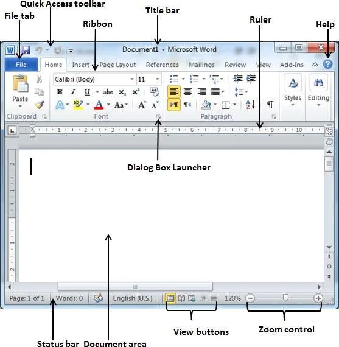
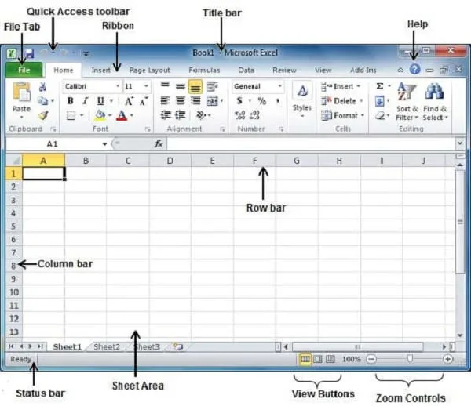
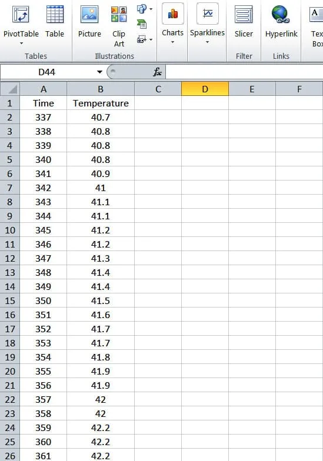
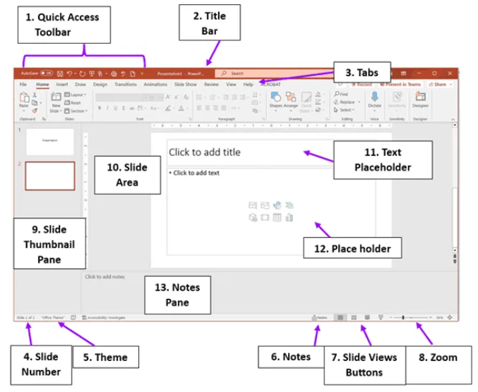

Expanded Nursing Uganda Explanation
Introduction to Microsoft computer packages should be understood beyond a short definition. Link the concept to patient history, focused assessment, common risks, nursing priorities, documentation and evaluation of outcomes.
Contents, 21 sections (tap to expand)
01 What are Microsoft Office Packages?
Microsoft Office is a collection of application software, often called a "suite" or "package" . These programs are designed to work together to help you perform common tasks at work, school, and home. As a nursing student, you will find them extremely useful.
The three most important programs for you to learn are:
- Microsoft Word: For creating text documents like reports and letters.
- Microsoft Excel: For working with numbers, data, and creating charts.
- Microsoft PowerPoint: For creating and delivering presentations.
02 Part 1: Microsoft Word (The Word Processor)
Think of Microsoft Word as your digital exercise book or typewriter. It is a powerful tool for creating any document that is mostly text.
03 When would a nurse use Microsoft Word?
- Writing a research assignment or a case study report.
- Typing a formal letter or a job application.
- Creating a patient education flyer on a topic like "The Importance of Handwashing".
- Taking and organizing notes from a lecture.
04 Understanding the Word Interface (Screen)
When you open Word, you will see several key areas:
- The Ribbon: The large bar across the top. It contains all the tools and commands, organized into different Tabs .
- Tabs: Labels on the Ribbon like Home , Insert , Page Layout , and View . Clicking a tab shows you a different set of buttons. The Home tab has the most common formatting tools (font size, bold, alignment).
- The Insert tab lets you add things like pictures, tables, and page numbers.
- Document Area: The main white page where you type your text.
- Cursor: The small, blinking vertical line ( | ) that shows you where your next letter will appear.
- Status Bar: The bar at the very bottom that shows information like the page number and word count.
05 1. Creating and Saving Documents
- Creating a New Document: Go to File > New > Blank document .
- Saving Your Work: This is the most important skill! Save As: Use this the first time you save a file. Go to File > Save As . You must choose a location (like your Documents folder) and give your file a name .
- Save: After you have saved the file once, use File > Save (or click the floppy disk icon) to quickly save any new changes you have made. Save your work every 5-10 minutes!
06 2. Formatting Your Text and Paragraphs
Formatting makes your document look professional and easy to read. First, you must select (highlight) the text you want to change.
- Character Formatting (on the Home tab): Font: Change the style of the text (e.g., Times New Roman, Arial).
- Font Size: Make text bigger or smaller.
- Font Color: Change the color of the text.
- Bold , Italic , and Underline : Emphasize important words.
- Paragraph Formatting (on the Home tab): Alignment: Align your text to the Left, Center, or Right of the page.
- Line Spacing: Change the amount of space between lines of text (e.g., single or double spacing).
- Bullets and Numbering: Create organized lists, like this one!
07 3. Adding Tables and Pictures
Go to the Insert tab to add these elements.
- Tables: Perfect for organizing information. For example, creating a simple medication schedule for a patient. Go to Insert > Table and choose how many rows and columns you need.
- Pictures: To make your document more visual. Go to Insert > Pictures to add an image from your computer.
08 4. Proofreading Your Document
Before you print or submit your work, always check for mistakes.
- Spell Check: Word automatically puts a red squiggly line under words it thinks are spelled incorrectly. Right-click the word to see suggestions.
- Grammar Check: A blue squiggly line suggests a grammatical error. Right-click to see suggestions.
09 Part 2: Microsoft Excel (The Spreadsheet)
Think of Excel as a very smart calculator and an organized grid. It is designed for working with numbers, lists of data, and making calculations.
10 When would a nurse use Microsoft Excel?
- Tracking a patient's vital signs (temperature, blood pressure, pulse) over several days to see trends.
- Creating a schedule or rota for nurses on a ward.
- Managing the inventory of medical supplies (e.g., gloves, syringes, bandages).
- Analyzing data from a small research project.
11 Understanding the Excel Interface
- Workbook and Worksheet: An Excel file is called a Workbook . A workbook contains one or more pages called Worksheets (or "sheets").
- Columns: The vertical sections, labeled with letters (A, B, C...).
- Rows: The horizontal sections, labeled with numbers (1, 2, 3...).
- Cell: A single box where a row and column meet. Each cell has a unique address, like B4 (column B, row 4).
- Formula Bar: The long white bar above the columns where you can see or type the contents of the selected cell. This is very important for formulas.
12 1. Entering and Formatting Data
Click on a cell and start typing to enter data (text, numbers, or dates). You can format cells to make your data clearer. Right-click a cell and choose "Format Cells" to see options like:
- Number Formatting: Display numbers as currency, percentages, or with a specific number of decimal places.
- Alignment and Font: Just like in Word, you can change the text alignment and style within a cell.
13 2. Using Formulas and Functions (The Power of Excel)
This is what makes Excel so powerful. A formula is a calculation you create.
- Every formula must start with an equals sign (=).
- Basic Arithmetic: You can use cell addresses in your formulas. Example: To add the value in cell C2 and cell C3, you would type =C2+C3 into another cell.
- Functions: These are pre-built formulas that save you time. SUM: Adds up a range of cells. Example: =SUM(B2:B10) will add all the numbers from cell B2 down to B10.
- AVERAGE: Calculates the average of a range of cells. Example: To find the average temperature of a patient, you could use =AVERAGE(C2:C8) .
- MAX and MIN: Finds the highest (MAX) or lowest (MIN) value in a range.
- COUNT: Counts how many cells in a range contain numbers.
14 3. Creating Charts
Charts help you visualize your data, making it much easier to understand patterns and trends. Select your data, then go to the Insert tab and choose a chart type.
- Line Chart: Perfect for showing a trend over time (e.g., a patient's blood pressure over a week).
- Bar Chart: Good for comparing different categories (e.g., number of patients in different wards).
- Pie Chart: Shows the parts of a whole (e.g., the percentage of a clinic's budget spent on different items).
15 Part 3: Microsoft PowerPoint (The Presentation Tool)
Think of PowerPoint as a tool for creating a digital slide show. It helps you present your ideas clearly and professionally to an audience.
16 When would a nurse use PowerPoint?
- Giving a health education talk to patients or a community group.
- Presenting a patient case study to other nurses and doctors.
- Presenting your research findings for a school project.
17 Building a Presentation
- Choose a Design: Go to the Design tab to pick a professional-looking theme. This keeps all your slides consistent.
- Add Slides: On the Home tab, click "New Slide". Choose a layout that fits your content (e.g., "Title and Content").
- Add Content: Type your text into the text boxes. Keep your text short and use bullet points. Too much text on a slide is hard to read! Go to the Insert tab to add pictures, charts, and videos.
- Add Transitions (Optional): Transitions are the effects used when you move from one slide to the next. Go to the Transitions tab to add them. Use simple ones like "Fade" or "Push" to look professional.
- Practice and Present: Click the "Slide Show" icon at the bottom right of the screen to see your presentation in full-screen mode. Practice what you are going to say for each slide.
- What are the three main programs in the Microsoft Office suite, and what is the primary purpose of each?
- In Microsoft Word, what is the difference between using "Save" and "Save As"? When would you use each?
- A patient's temperature readings for a week are: 37.1, 37.5, 38.2, 38.8, 38.1, 37.4, 37.2. If these values are in cells A1 to A7 in Excel, what formula would you write to find the average temperature?
- What is the purpose of the "Ribbon" in Microsoft Word and Excel?
- Describe a situation in your future nursing work where you would choose to use Microsoft Excel instead of Microsoft Word. Explain your choice.
- What is a good rule for the amount of text you should put on a single PowerPoint slide? Why?
- In Word, what do the red and blue squiggly lines under text mean?
- Name two different types of charts you can create in Excel and give a nursing-related example for each.
Prepared by Nurses Revision
18 Nursing Uganda Clinical Lens
Use Introduction to Microsoft computer packages as a practical nursing topic, not only a memorized definition. Translate theory into safe decisions, accountability, communication and service improvement.
- What to understand first: define introduction to microsoft computer packages, identify the normal or expected pattern, then explain what changes when the patient is unwell.
- Why it matters in care: the nurse must recognize risk early, explain findings clearly, document accurately and know when to escalate.
- How to revise it: connect each point to assessment, nursing diagnosis or care problem, intervention, rationale and evaluation.
19 Assessment Guide
- The problem, stakeholders, available resources, policy requirements and ethical issues.
- Risks to patients, staff, confidentiality, quality, costs and continuity.
- Documentation, reporting lines, supervision and evaluation measures.
20 Nursing Priorities, Rationales and Outcomes
- Use evidence, policy and professional standards to guide action.
- Communicate clearly, document decisions and protect confidentiality.
- Evaluate whether the action improves safety, learning or service delivery.
The rationale for these priorities is patient safety: nursing actions should prevent deterioration, reduce discomfort, support recovery and create clear evidence for the next caregiver.
- Expected outcome: The plan is documented, realistic, ethical and improves patient care or learning outcomes.
21 Patient Teaching and Revision Check
- Explain introduction to microsoft computer packages in simple language the patient or caregiver can repeat back.
- Teach warning signs, medicine or follow-up instructions, hygiene or lifestyle points where relevant.
- For exams, prepare a short answer using: definition, causes or risk factors, signs, assessment, management, complications and prevention.
- For ward practice, document baseline findings, actions taken, patient response and the plan for review.
Illustrations and Diagrams (6)





Related Video Lectures
Watch nursing lecture videos on YouTube for this topic. Opens in a new tab.
Watch on YouTubeExternal link: YouTube may use its own cookies and terms. Nursing Uganda is not affiliated with YouTube.